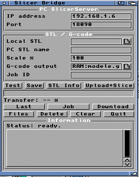

|
Menu | OctoControlSpeak | Troubleshooting SlicerMUI / Slicer Bridge PurposeSlicerMUI sends an STL file from the Amiga to a PC. The PC runs PrusaSlicer from the command line and sends the generated G-code back to the Amiga. WorkflowAmiga STL -> PC SlicerServer -> PrusaSlicer -> G-code -> Amiga The G-code can then be uploaded to OctoPrint with OctoControlSpeak. PC SideRun the Python server from the PC_SlicerServer drawer: python slicer_server.py Configure slicer_server.cfg with the PrusaSlicer path, printer profile, output drawers and allowed Amiga IP addresses. Amiga Buttons
NotesOn real 68060 hardware, uploads can be slower than on PiStorm or WinUAE. The transfer is intentionally gentle to remain reliable on classic network cards. |